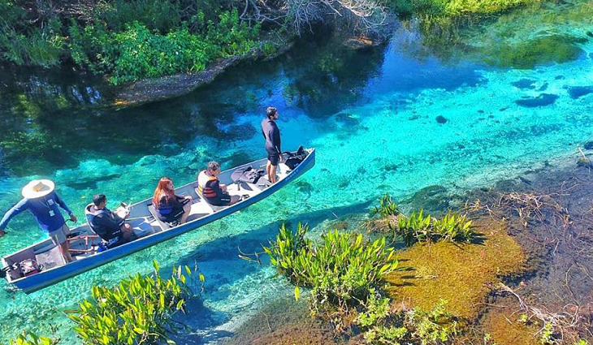

Bonito
Bonito é uma cidade localizada no estado de Mato Grosso do Sul, conhecida por suas paisagens deslumbrantes, rios cristalinos e uma grande biodiversidade. Considerada um dos principais destinos de ecoturismo do Brasil, Bonito oferece uma experiência única para quem ama a natureza e atividades ao ar livre, com rios de águas transparentes, grutas incríveis e cachoeiras espetaculares.

O que fazer em Bonito
-
Flutuação no Rio da Prata
Uma das atividades mais icônicas de Bonito. A flutuação no Rio da Prata é uma experiência única em águas cristalinas, onde é possível ver uma vasta diversidade de peixes e plantas subaquáticas.
-
Gruta do Lago Azul
Um dos cartões-postais de Bonito, a Gruta do Lago Azul é uma caverna com um lago de um azul intenso, considerado um dos maiores lagos subterrâneos do mundo.
-
Buraco das Araras
Um imenso dolina (depressão geológica) com mais de 100 metros de profundidade, que serve como habitat natural para araras e outras aves.
-
Aquário Natural
Um riacho de águas cristalinas onde os visitantes podem fazer flutuação e observar a rica biodiversidade de peixes e plantas subaquáticas.
-
Abismo Anhumas
Uma caverna incrível que só é acessível através de rapel. Dentro, há um lago subterrâneo onde é possível fazer mergulho e flutuação.
Melhor Época para Visitar
A melhor época para visitar Bonito é durante a estação seca, de maio a setembro, quando as águas estão ainda mais cristalinas e há menos chuvas, facilitando as atividades ao ar livre. No entanto, no verão (dezembro a março), apesar de ser mais chuvoso, as cachoeiras ficam mais cheias e o verde da vegetação fica mais vibrante, proporcionando belas paisagens.